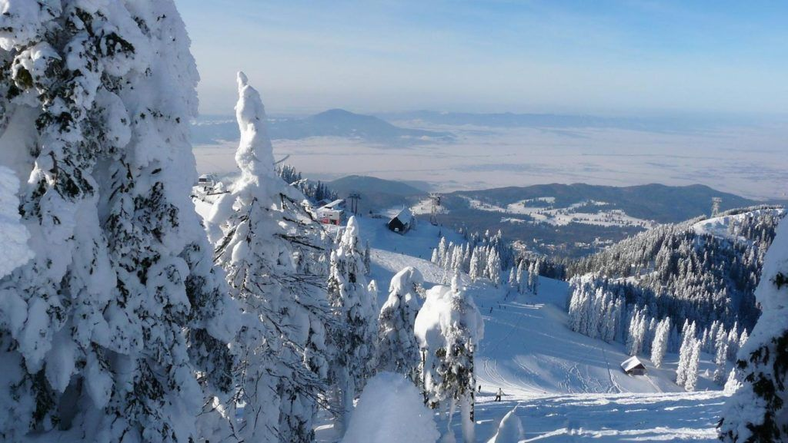
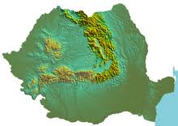

TRANSILVANIA
NOTICIAS
11/03/2019
Seguramente sin la sombra de la obra de Bram Stoker la región rumana de Transilvania no sería tan afamada para bien o para mal. Lo cierto es que la Transilvania que nos ha llegado a través del cine y literatura es una pequeña porción de una realidad tan variada y rica que es difícil dar abasto en una semana de viaje.
11/03/2019
Situada en el corazón de Rumanía, con Maramures al norte, Valaquia al sur, Moldavia al este, y el Banato y Crisana al oeste, Transilvania tiene un relieve que va desde las colinas y lagos del norte, a los valles boscosos del sur. En la región de Transilvania se sitúan algunas de las ciudades medievales mejor conservadas de Europa.
Poiana Brasov
 Aunque ya apareció un especial en la página 72 del primer número de la historia de Solo Nieve sobre el esquí en Rumanía y se trata de un país donde se encuentran los Cárpatos y con casi 100 estaciones de esquí, en lo último que piensa uno cuando oye hablar de Rumanía es en esquí. Y de hecho, la mayoría de estaciones son muy pequeñas. Por ello, cuando me salió la oportunidad de esquiar en Rumanía, era bastante escéptico respecto a lo que iba a encontrar, pero este país esconde algunas regiones donde se puede practicar muy buen esquí. En este caso, la estación visitada ha sido la de Poiana Brasov, en los Cárpatos, situada en Transilvania.Montes Carpatos
 Los montes Cárpatos son un sistema montañoso de Europa oriental que forma un gran arco de 1600 km de longitud y unos 150 km de anchura media, a lo largo de las fronteras de Austria, la República Checa, Eslovaquia, Polonia, Ucrania, Rumania, Serbia y el norte de Hungría, lo que le convierte en la segunda cordillera más larga de Europa tras los Alpes escandinavos, con 1700 km. En los Cárpatos se encuentran las mayores poblaciones europeas de oso pardo, lobo europeo, gamuzas y linces, con la mayor concentración en Rumania, y más de un tercio de todas las especies de plantas de Europa.Sitios que Visitar en Transilvania
Descubre los rincones más bonitos que oculta Transilvania, el país de Drácula y de los paisajes de película Transilvania, la región más misteriosa de Rumania, a tan sólo dos horas en coche de la capital Bucarest, se alza en el centro del país rodeada por los montes Cárpatos. Un lugar perfilado por abruptas montañas, extensas autopistas vacías, profundos valles y espesos bosques envueltos en un aura enigmática. En Transilvania historia y leyenda van de la mano. Conocer esta zona supone adentrarse en la tierra del príncipe de las tinieblas, Vlad III de Valaquia, más conocido como Drácula. Un hombre cruel, aterrador y temible que fue transformado en leyenda gracias al escritor Bram Stoker.
© Copyright 2019 | Designed by Alejandro Vaquero